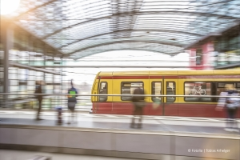
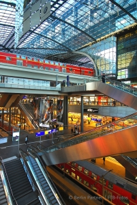

Auch wenn Berlin sich zu einer smarten Stadt entwickelt, leben wir aktuell doch in der Infrastruktur des
letzten Jahrtausends. ÖPNV, Fahrräder und Autostraßen kennen wir alle. Wird sich dies bald ändern? Und
was werden die Triebfedern dieses Wandels sein?
Veraltertes ÖPNV Netzt

Auf dem Bild ist eine Berliner Straßenbahn zu sehen.
Die sich abzeichnenden Megatrends kann man mit den Schlagworten Urbanisierung, Digitalisierung und
Dekarbonisierung umreißen. Der Zuzug von Menschen in immer größere, stark verdichtete Städte ist eine
große Herausforderung. Intelligente Mobilität ist entscheidend, damit Städte attraktiv und lebenswert
bleiben. Die Vision ist, sich problemlos fortbewegen zu können, ohne Lärmbelästigung, jederzeit, sicher,
ohne Stau und schädliche Abgase.
Wir stecken mit den Beinen noch im 20 Jahrhundert, mit dem Kopf aber schon im Morgen.
Auch die Frage nach dem öffentlichen Raum und wie er in Zukunft genutzt werden soll, ist unheimlich
wichtig. In Berlin können wir Lösungen finden. Berlin eignet sich aufgrund seines Metropolencharakters
als Test- und Experimentierfeld für die Entwicklung von innovativen, nachhaltigen Konzepten, die dann
auch auf größere, globale Megacities übertragen werden können.
Die Verschmelzung von Nachhaltigkeit und Technologie

Auf dem Bild ist das Brandenburger Tor zu sehen.
Zunächst einmal hat diese Zukunft bereits begonnen. Wir stecken schon mitten drin in diesem Wandel. Das
persönliche Mobilitätsverhalten von vielen von uns wird nachhaltiger, weil wir mehr Radfahren, zu Fuß
gehen und öffentliche Verkehrsmittel nutzen. Aber auch die Nutzung neuer Mobilitätslösungen, wie echtes
Ridesharing, rückt immer mehr ins Bewusstsein.
Niemand braucht in Metropolen mehr ein eigenes Auto. Viel besser ist ein verkehrsträgerübergreifendes
Mobilitätsbudget, zum Beispiel auf einer Mobilitätskarte.
Welche Themen stehen dabei für Berlin Partner im Vordergrund?
Im Moment konzentrieren wir uns auf einige ausgewählte Leitthemen, die unserer Meinung nach dazu
beitragen, die Mobilitätsziele zu erreichen und den Trends von morgen schon heute zu begegnen. Dazu
gehört sowohl die Vernetzung von verschiedenen Verkehrsteilnehmern untereinander als auch mit der
Infrastruktur. Außerdem innovative Mobilitätskonzepte und -services, effiziente, emissionsarme und dabei
auch ressourcenschonende Technologien sowie die Sektorenkopplung mit der Energiebranche.
Die Zukunft muss irgendwo beginnen und Berlin ist der geeignete Ort dafür.
Konkret treiben wir aktuell Projekte voran, die sich mit den Themen Automatisiertes Fahren, Mobility as
a Service, Smart City und Internet of Things (IoT) im Kontext der Mobilität und des öffentlichen Raumes
auseinandersetzen. Das Land Berlin setzt dabei mit seinen Zukunftsstrategien die entsprechenden
Leitplanken. Wie sieht es mit der Luftfahrt aus? Die wird immer wichtiger. Auch in den Städten. Große
Potenziale sehen wir zum Beispiel im Bereich der Drohnentechnologien. Sehr gerne würden wir hier in
Berlin das weltweit erste innerstädtische Test- und Demonstrationszentrum für zivile Drohnentechnologien
etablieren. Damit Drohnen in Zukunft auch in der Stadt fliegen können, ist es wichtig, dass die
Akzeptanz für diese auch von vielen Akteuren hier in der Hauptstadtregion schon weit entwickelte
Technologie wächst.
Welche Rolle spielen Berlin Partner und Ihr Team dabei?
Auf dem Bild ist der Gendarmenmarkt zu sehen.
Unser Bereich ist untergliedert in fünf Handlungsfelder: Automotive, Verkehrstelematik,
Schienenverkehrstechnik, Logistik und Luft- und Raumfahrt. Branchenexperten, die auch Erfahrungen mit
nationalen und internationalen Projekten haben, sind für die jeweiligen Handlungsfelder zuständig. Wenn
ein Unternehmen oder eine Wissenschaftseinrichtung eine Projektidee hat, können wir diese hinsichtlich
ihres Innovationsgehaltes bewerten. Wir beraten dazu, wie die Erfolgsaussichten auf eine Förderung sind,
wie der Antrag optimiert werden kann und welche Möglichkeiten der Förderung es durch das Land, Bund oder
die EU gibt. Parallel sondiert unser Haus aktiv Förderbekanntmachungen, um Unternehmen gezielt darauf
hinzuweisen, Projektideen zu generieren und Entwicklungskonsortien zu konstituieren. Außerdem haben wir
einen recht guten Überblick über die Firmen, Wissenschaftseinrichtungen und ihre Expertise, die hier in
Berlin aber auch überregional ansässig sind und vernetzen diese untereinander, wenn gezielt Fertigkeiten
gesucht sind.